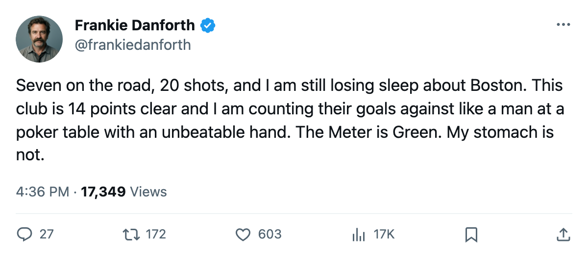

BOS
BOSDANFORTH: Code Green, 14 clear, a 7-1 on 20 shots, and the 0-2-1 that keeps me honest
The lead grew over the weekend. The only number that still bugs me did not move.
 Frankie DanforthColumnist · Queen City Telegram
Frankie DanforthColumnist · Queen City Telegram
Code Green

Toronto leads the Northeast by 14 points. The head-to-head against Boston is 0-2-1. Those two numbers, side by side, are the whole of this week's argument.
 Toronto Maple Leafs scored 7 at
Toronto Maple Leafs scored 7 at  Pittsburgh Penguins on Sunday night. The shot count says 20 for, 31 against. A 7-1 win on 20 shots means the finishing was absurd, or the goaltending was excellent, or some ugly alchemy of both. Pittsburgh came in short-handed, missing 3 forwards. A 6-goal road win against a depleted club proves one thing: this group has enough depth to bury you when you're already stretched thin.
Pittsburgh Penguins on Sunday night. The shot count says 20 for, 31 against. A 7-1 win on 20 shots means the finishing was absurd, or the goaltending was excellent, or some ugly alchemy of both. Pittsburgh came in short-handed, missing 3 forwards. A 6-goal road win against a depleted club proves one thing: this group has enough depth to bury you when you're already stretched thin.
What I won't pretend away is Boston. Three meetings, 7 goals for, 10 against, zero regulation wins. Tomorrow Toronto Maple Leafs visits Boston for game 4. If Boston wins, they almost certainly own the season series. If Boston owns the season series and finishes with fewer losses than this club (the 2 games in hand are the arithmetic that keeps me honest), the division tiebreaker belongs to them.
Fourteen points. That's enormous. But 14 is not the problem. Boston is the only club in this division that has beaten this team twice in regulation, and the only one that can still take a point differential in a head-to-head nobody wants to explain in April.
The young guys are pulling the form term north.  Marian Gaborik99 at +11 on the Bureau's Development Index, the highest reading among any Toronto man.
Marian Gaborik99 at +11 on the Bureau's Development Index, the highest reading among any Toronto man.  Stanislav Chistov87 at +8.
Stanislav Chistov87 at +8.  Rostislav Klesla87 at +8.
Rostislav Klesla87 at +8.  Jamie Lundmark81 at +8.
Jamie Lundmark81 at +8.  Rick Nash85 at +7. Five risers. No other club in the division has more than 1.
Rick Nash85 at +7. Five risers. No other club in the division has more than 1.
That's why the Meter stays Green. A room with 5 guys trending up, a 14-point lead, and a road game where you scored 7 doesn't need to hold its breath over a Tuesday night. The Index says this team is getting better, not coasting. The standings agree.
But I'll be watching the score at 9pm and I'll write about it Wednesday morning either way. If the head-to-head goes to 0-3-1 and Boston owns the tiebreaker, I'll say so. The lead is big enough to absorb one more loss to the same club. It is not big enough to make the loss stop mattering.
Code Green.
